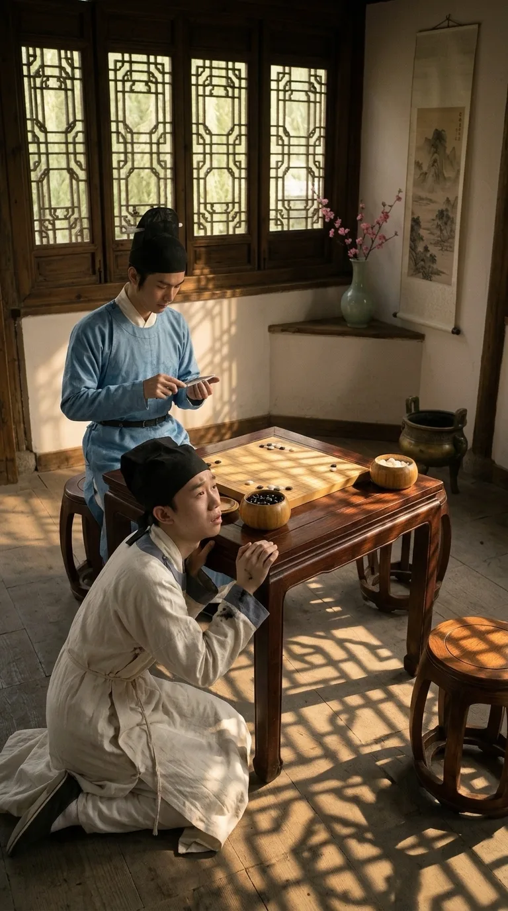
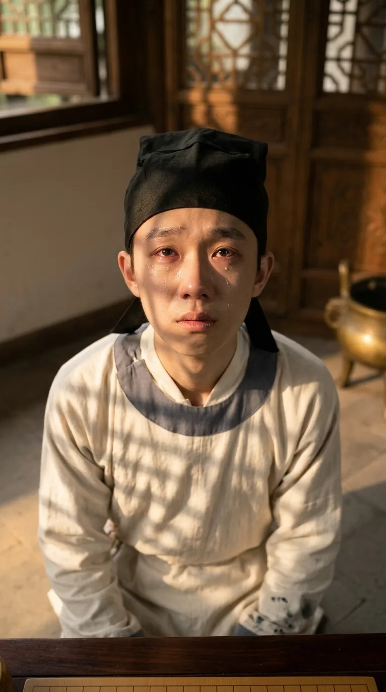
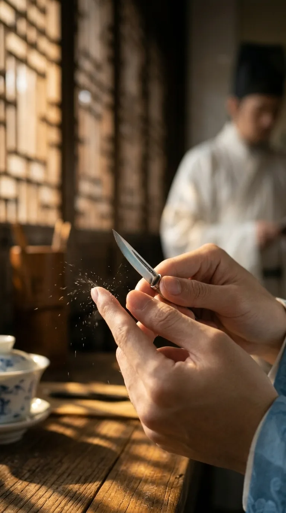

走位温如风坐在束腰紫檀方桌北侧，面朝南；林慕白坐在束腰紫檀方桌南侧，面朝北；其余座位空着，没有其他人。9:16竖屏采用低机位纵深对峙：林慕白占画面下方前景，开场瞬即双膝砸跪在桌南侧木地板上、双手死死扒住桌沿；温如风居画面上方中景、坐在桌北侧鼓凳上垂眼修甲，两人隔束腰紫檀方桌相距约两步，窗格午后斜阳从温如风背后侧斜切桌面棋盘。
-
#1 0.00s 起 · 3s 中景 · Push In 温如风林慕白 修甲寸银小刀
35mm 中广角，深景深 · 双人 + 桌南低机位纵深微仰 · 纵深前后景 · 视线 书生仰望对方面部，青衣男子垂眼看指尖银刀 · 焦点 先锁前景扣紧桌沿的手与颤抖肩背，随后带实后景青衣男子手中寸银小刀 · 稳定
冷开场：白衣书生双膝重重砸跪在听风楼木地板上，双手死死扣住桌沿；桌对面青衣男子垂眼捏着寸银小刀，慢条斯理修着指甲。
-
#2 3.00s 起 · 5s 特写 · Static Shot 林慕白
85mm 长焦，浅景深 · 月白襕衫年轻书生 + 桌北俯视 25° 正面 · 中心构图 · 视线 斜上方对方面部 · 焦点 锁定年轻书生含泪发红的双眼与颤抖唇部 · 微晃
林慕白温大侠，您价钱公道。
林慕白可小生实在只有三百两啊！
-
#3 8.00s 起 · 2s 大特写 · Static Shot 温如风 修甲寸银小刀
100mm 微距，极浅景深 · 天青直裰青年男子双手 + 平视微侧 · 三分法 · 视线 指尖垂落随后抬向对面 · 焦点 锁定指间寸银小刀银刃与竖起的那根修长食指 · 稳定
温如风慢条斯理吹去指尖碎屑，朝对面的林慕白竖起一根手指。
How the reference pictures align with the target video — Picture 1 (from Shot 1) aligns with the 0.00-second mark of the target video; Picture 2 (from Shot 2) aligns with the 3.00-second mark of the target video; Picture 3 (from Shot 3) aligns with the 8.00-second mark of the target video. integrated_multimodal_description: [Shot 1] <Picture 1> establishes the Northern Song teahouse parlor in low golden late-afternoon lattice shadows; in a slow push in, a young scholar in a moon-white cotton robe slams his knees heavily onto the timber floor in the lower foreground, clutching the rosewood square table edge with trembling hands, while across the go board a young man in an azure silk robe sits composedly in the upper midground, calmly paring his nails with a miniature one-inch silver knife. [Shot 2] At 00:03.000, the camera cuts to <Picture 2>: in a static shot looking slightly downward over the table edge, the young scholar in a white cotton robe lifts his tear- and sweat-streaked face, his reddened eyes glistening as (S1), an early-20s male in a white scholar robe, pleads in a light fragile tenor-baritone with trembling hurried bursts, <d>[Chinese] 温大侠，您价钱公道。</d> then immediately presses on without loosening his grip, <d>[Chinese] 可小生实在只有三百两啊！</d> [Shot 3] At 00:08.000, the camera cuts to <Picture 3>: in a static shot framed tightly on pale slender fingers holding the one-inch silver willow-leaf manicure knife, the young man in the azure robe lightly blows tiny nail shavings off his thumb into the sunlit air and raises one poised index finger toward the blurred white figure across the table. overall_soundscape: Heavy thud of knees hitting timber floorboards, hands gripping the wooden table edge, faint metallic scrape of a tiny blade paring nails, and soft breeze rustling willow leaves outside. non_diegetic_music: Low restrained guqin harmonics with sparse slow cello plucks, steady and oppressive.
@[图片1] = 分镜图 #1
@[图片2] = 分镜图 #2
@[图片3] = 分镜图 #3
【人物关系与构图逻辑】
温如风坐在束腰紫檀方桌北侧，面朝南；林慕白坐在束腰紫檀方桌南侧，面朝北；其余座位空着，没有其他人。9:16竖屏采用低机位纵深对峙：林慕白占画面下方前景，开场瞬即双膝砸跪在桌南侧木地板上、双手死死扒住桌沿；温如风居画面上方中景、坐在桌北侧鼓凳上垂眼修甲，两人隔束腰紫檀方桌相距约两步，窗格午后斜阳从温如风背后侧斜切桌面棋盘。
【镜头1】
焦距：35mm 中广角，深景深
机位：双人 + 桌南低机位纵深微仰
构图：纵深前后景
运镜：推镜
景别：中景
画面：镜头随动作缓慢推镜拉近纵深，下方前景一名月白襕衫年轻书生双膝重重砸跪在木地板上、双手死死扣紧方桌沿、双肩剧烈颤抖，上方后景一名天青直裰青年男子垂眼稳坐桌对侧，捏持寸银小刀慢条斯理轻修指甲，神色波澜不惊。（构图参考 @图片1）
光影：午后斜阳透过雕花支摘窗斜射，在桌面黑白围棋盘投下锐利窗格光影
台词：{}
视线落点：书生仰望对方面部，青衣男子垂眼看指尖银刀
焦点：先锁前景扣紧桌沿的手与颤抖肩背，随后带实后景青衣男子手中寸银小刀
稳定性：稳定
音效：双膝重砸木地板的闷响，手指攥紧桌沿声
【镜头2】
焦距：85mm 长焦，浅景深
机位：月白襕衫年轻书生 + 桌北俯视 25° 正面
构图：中心构图
运镜：固定镜头
景别：特写
画面：固定镜头俯拍，月白襕衫年轻书生仰起泪汗交加的脸庞，微红眼眶蓄满水光，嘴唇发颤急切开口哀求，脖颈前伸、双手仍死死抓着桌沿不肯松半分力道。（构图参考 @图片2）
台词：{温大侠，您价钱公道。} {可小生实在只有三百两啊！}
视线落点：斜上方对方面部
焦点：锁定年轻书生含泪发红的双眼与颤抖唇部
稳定性：微晃
音效：压抑带哭腔的急促抽气声
【镜头3】
焦距：100mm 微距，极浅景深
机位：天青直裰青年男子双手 + 平视微侧
构图：三分法
运镜：固定镜头
景别：大特写
画面：固定镜头对准天青直裰青年男子指尖与寸银小刀，他停住修甲动作，轻吹一口气拂去指尖细屑，随即稳稳竖起一根修长白净的食指朝向对面。（构图参考 @图片3）
台词：{}
视线落点：指尖垂落随后抬向对面
焦点：锁定指间寸银小刀银刃与竖起的那根修长食指
稳定性：稳定
音效：轻轻吹气的气流声
<木地板承受双膝重砸的闷响，指尖木桌沿摩擦声，微弱的银刀轻刮指甲嚓嚓声，窗外隐约柳叶风声与远巷市声。>
（低沉克制的古琴泛音配合稀疏大提琴拨弦，慢板，透出压迫与冷漠。）
【约束】
1. 保持无字幕，避免生成任何文字或字幕
2. 视频全程禁止出现外形、着装、配饰完全一致的人物